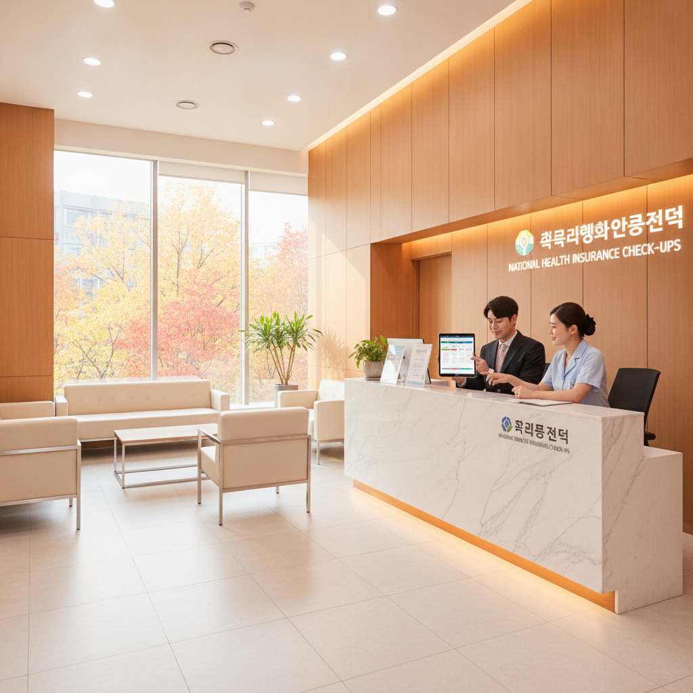
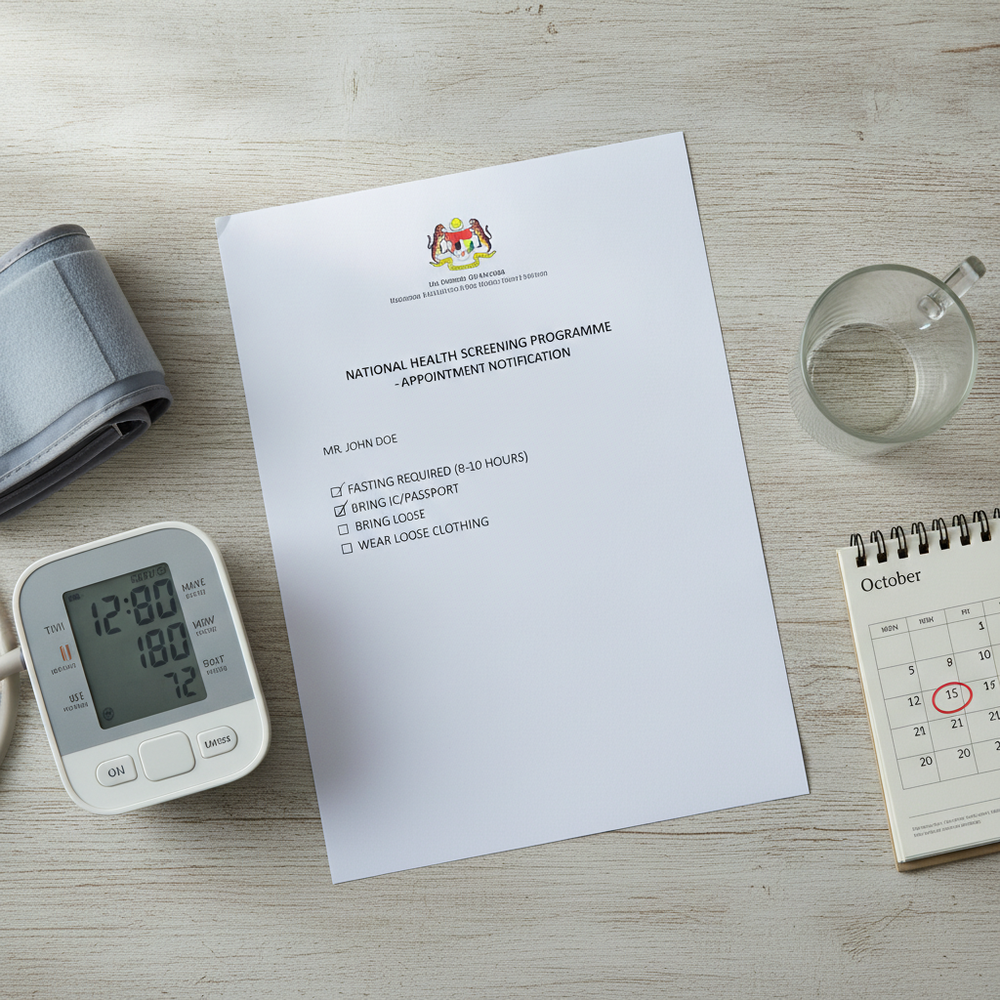

환절기 직장인 국가건강검진 예약법 — 짝수년도 대상자 확인과 검진 병원 찾는 순서
2026년 직장인 일반건강검진은 짝수년도 출생자(1980, 1986, 1990, 1994년 등 출생 직장가입자)가 의무 대상이며, 사무직은 2년 주기, 비사무직은 매년 검진을 받아야 합니다.
11월과 12월에는 수검자의 40% 이상이 한꺼번에 몰려 위·대장 내시경 예약이 전면 마감되고 대기 시간만 3시간 이상 소요되므로, 9월 하순부터 10월 중순까지가 가장 여유롭게 검진을 마칠 수 있는 골든타임입니다.
국민건강보험공단 누리집과 모바일 앱을 통한 대상자 확인법, 무료 기본 항목과 연령별 암 검진 비교표, 그리고 미수검 시 최대 30만 원 과태료를 방지하는 실전 예약 순서를 정리해 드립니다.

종합건강검진센터 안내 데스크에서 검진 일정을 확인하는 모습 / AI 제작 이미지
01 | 2026년 직장인 일반건강검진 대상자 기준과 짝수년도 확인법
우리나라 모든 건강보험 직장가입자는 산업안전보건법과 국민건강보험법에 따라 정기적인 건강검진을 받을 의무와 권리가 있습니다. 2026년은 짝수 해이므로 원칙적으로 태어난 연도 끝자리가 짝수인 분들(예: 1982, 1988, 1994, 2000년생 등)이 올해 일반건강검진 대상자입니다.
다만 직무 형태에 따라 수검 주기가 다릅니다. 일반 사무직 근로자는 2년에 1회 검진을 받으므로 짝수년도 출생자만 해당하지만, 공장, 건설, 유통, 배달 등 현장 업무에 종사하는 비사무직 근로자는 출생연도와 관계없이 매년 1회 검진을 받아야 합니다.
자신이 올해 대상자인지 헷갈린다면 회사 인사팀(총무팀)에 문의하거나, 국민건강보험공단 모바일 앱에서 간편인증 한 번으로 10초 만에 본인의 정확한 검진 대상 여부를 확인할 수 있습니다.
02 | 왜 9~10월에 예약해야 하나 — 11~12월 연말 대란을 피하는 이유
국민건강보험공단의 통계 자료에 따르면, 전체 수검자의 약 40% 이상이 11월과 12월 두 달 사이에 집중적으로 병원을 찾습니다. 한국 직장인 특유의 "연말에 몰아서 해야지" 하는 습관 때문입니다.
이 시기에 병원을 찾으면 다음과 같은 극심한 불편을 겪게 됩니다. 첫째, 위 내시경 및 대장 내시경 예약이 10월 말이면 이미 연말까지 100% 마감되어 원하는 날짜에 검사를 받을 수 없습니다. 둘째, 병원 대기실이 인산인해를 이루어 기본 검진을 받는 데만 3시간 이상 기다려야 합니다. 셋째, 의료진의 피로도가 높아져 상담이 형식적으로 짧아지기 쉽습니다.
따라서 선선한 가을바람이 부는 9월 하순부터 10월 중순 사이에 평일 오전이나 토요일을 예약하여 검진을 끝마치는 것이 가장 쾌적하고 꼼꼼한 진료를 받을 수 있는 현명한 방법입니다.
03 | 국민건강보험공단 누리집과 The건강보험 앱 대상자 조회 순서
스마트폰을 이용해 내가 올해 어떤 검진을 무료로 받을 수 있는지 확인하는 표준 4단계를 안내합니다.
국민건강보험 모바일 앱 대상자 확인 4단계
1단계: 'The건강보험' 공식 앱 설치 및 실행
스마트폰 앱스토어에서 국민건강보험공단 공식 앱인 'The건강보험'을 내려받아 실행합니다.
2단계: 간편인증 로그인
카카오톡, 네이버, 토스, 패스(PASS), 금융인증서 등 본인이 편리한 간편인증 수단으로 본인 인증 로그인을 진행합니다.
3단계: [건강iN] → [나의 건강검진정보] 메뉴 접속
하단 전체 메뉴에서 [건강iN] 탭을 누른 뒤 [나의 건강검진] → [검진 대상조회] 메뉴를 선택합니다.
4단계: 검진 항목 확인 및 인쇄/캡처
화면에 표시되는 [일반건강검진] 대상 여부(본인부담 없음)와 함께 본인의 나이에 따라 부여된 [국가 암 검진 항목]을 꼼꼼히 확인합니다.
이 화면을 캡처해두면 병원에 예약 전화를 걸거나 방문 접수할 때 본인에게 해당하는 검사항목을 정확하게 요청할 수 있습니다.
04 | 일반건강검진 무료 기본 항목 vs 성·연령별 추가 검진 항목
일반건강검진은 국민건강보험공단에서 검진 비용을 전액 100% 부담하므로 본인이 지불하는 금액이 전혀 없습니다(0원). 검진 항목은 크게 공통 검사와 특정 나이에만 적용되는 성·연령별 검사로 나뉩니다.
| 검진 구분 | 검사 항목 세부 내용 | 검사 목적 |
|---|
| 공통 기본 검사 | 신체계측(키·몸무게·허리둘레·체질량지수), 시력, 청력, 혈압 측정 | 기초 비만도 및 고혈압 등 만성질환 스크리닝 |
| 혈액 검사 | 공복혈당, AST, ALT, 감마-GTP(간기능), 혈색소(빈혈) | 당뇨병, 지방간, 간기능 장애, 빈혈 진단 |
| 요·방사선 검사 | 요단백 소변검사, 흉부 X-ray 방사선 촬영 | 신장 질환 및 결핵, 폐질환 초기 진단 |
| 구강 검진 | 치과의사의 치아 검진, 치주질환 및 우식(충치) 확인 | 구강 건강 및 스케일링 필요성 확인 |
| 이상지질혈증 (4년 주기) | 총콜레스테롤, HDL, LDL, 중성지방 (남 만24세/여 만40세 이상) | 동맥경화, 고지혈증, 심뇌혈관 질환 예방 |
| 골밀도 검사 | 만 54세 및 만 66세 여성 대상 골밀도 측정 | 골다공증 및 골절 위험 조기 판정 |
기본 검진만으로도 현대인에게 가장 흔한 당뇨, 고혈압, 간장질환, 신장질환의 징후를 명확하게 포착할 수 있으므로 거르지 않고 정기적으로 수검하는 것이 중요합니다.
05 | 5대 국가 암 검진 주기와 본인부담금(무료~10%) 기준표
일반검진과 함께 꼭 챙겨야 할 것이 국가 암 검진입니다. 우리나라 사망 원인 1위인 암을 조기에 발견하기 위해 나이대별로 저렴한 비용이나 무료로 검사를 지원합니다.
| 암 검진 종류 | 대상 연령 및 검진 주기 | 검진 방법 | 본인 부담금 |
|---|
| 위암 | 만 40세 이상 남녀 (2년 주기) | 위내시경 검사 (수면비 별도) | 공단 90% 지원 / 본인 10% (약 1만 원 안팎) |
| 대장암 | 만 50세 이상 남녀 (매년 1년 주기) | 분변잠혈검사 (대변 검사) | 전액 무료 (0원) / 양성 시 내시경 무료 |
| 간암 | 만 40세 이상 고위험군 (6개월 주기) | 간 초음파 검사 + 혈청 알파태아단백 검사 | 공단 90% 지원 / 본인 10% (고위험군 대상) |
| 자궁경부암 | 만 20세 이상 여성 (2년 주기) | 자궁경부 세포도말검사 | 전액 무료 (0원) |
| 유방암 | 만 40세 이상 여성 (2년 주기) | 유방 단순 촬영 (X-선 검사) | 공단 90% 지원 / 본인 10% (약 몇천 원 수준) |
위암 검진의 경우 일반 위내시경은 1만 원 안팎의 본인부담금만 내면 되며, 비수면이 힘들어서 수면(진정) 내시경을 원할 경우 병원별 수면비(약 5만~8만 원)만 추가 결제하면 알뜰하게 검진을 마칠 수 있습니다.

국가건강검진 안내문과 전날 금식 및 준비물 체크리스트 / AI 제작 이미지
06 | 공단 지정 검진기관 검색과 위·대장 내시경 예약 요령
국가건강검진은 아무 병원에서나 받을 수 없으며, 국민건강보험공단의 시설과 인력 기준을 통과한 '검진기관 지정 병원'에서만 가능합니다.
병원 검색은 공단 홈페이지 [건강iN] → [검진기관 찾기]에서 집이나 회사 근처 주소를 입력하면 손쉽게 조회할 수 있습니다. 이때 병원 규모(의원급, 병원급, 종합병원)와 해당 기관이 일반검진 외에 위암, 대장암, 구강검진까지 한 번에 가능한 곳인지 필터를 걸어 검색하는 것이 좋습니다.
내시경을 함께 예약할 때의 꿀팁은 전화 예약 시 "국가검진 위내시경 대상자인데, 대장내시경을 추가하고 싶다"고 말씀하시는 것입니다. 같은 날 수면 마취 한 번으로 위와 대장을 동시에 검사하면 장정결제 복용의 번거로움과 마취 비용을 대폭 아낄 수 있습니다.
07 | 검진 전날 금식 시간과 복용 중인 약물(혈압약·당뇨약) 주의사항
정확한 혈당 및 간수치 검사를 위해 검진 전날 저녁 식사는 기름지지 않은 부드러운 음식으로 저녁 7시 이전에 가볍게 마쳐야 합니다. 그리고 검진 전날 밤 9시 이후부터는 물을 포함하여 일체의 음식물 섭취를 금식해야 합니다.
특히 만성질환 약물을 복용 중인 분들은 다음과 같은 복용 수칙을 반드시 숙지해야 합니다.
| 약물 종류 | 복용 수칙 및 주의사항 |
|---|
| 혈압약 (고혈압 치료제) | 검진 당일 새벽 6시경 최소량의 물(한 모금)로 복용 (혈압이 너무 높으면 내시경 불가) |
| 당뇨약 및 인슐린 주사 | 검진 당일 아침 복용 및 주사 금지 (금식 상태에서 투약 시 저혈당 쇼크 위험) |
| 아스피린·항응고제 | 내시경 조직검사 시 출혈 위험이 있으므로, 주치의 상담 후 5~7일 전 복용 중단 여부 결정 |
물을 마시면 위 내시경 시 시야를 가리고 위산 역류의 위험이 있으므로 검진 당일 아침에는 목을 축이는 수준 외에는 물도 마시지 않는 것이 안전합니다.
08 | 직장인 미수검 시 과태료 규정과 연기 신청(전년도 미수검자 추가)
직장인 건강검진은 권리이면서 동시에 법적 의무입니다. 정당한 사유 없이 당해 연도 내에 검진을 받지 않을 경우 산업안전보건법 제129조 및 제175조에 따라 사업주와 근로자에게 과태료가 부과됩니다.
| 위반 횟수 | 사업주 과태료 (근로자 1인당) | 근로자 귀책 시 과태료 (본인 고의 거부 시) |
|---|
| 1회 위반 시 | 10만 원 | 10만 원 |
| 2회 위반 시 | 20만 원 | 20만 원 |
| 3회 위반 시 | 30만 원 | 30만 원 |
만약 해외 출장, 임신, 질병 치료 등으로 올해 검진을 도저히 받을 수 없는 상황이라면 회사를 통해 국민건강보험공단에 '검진 연기 신청(전년도 미수검자 등록)'을 진행할 수 있습니다. 전년도 홀수 해에 검진을 놓친 분이라도 공단 지사에 전화해 "작년에 못 받았는데 올해 추가 등록해주세요"라고 요청하면 올해 짝수 해 검진과 함께 무료로 추가 수검이 가능합니다.
09 | 주말 검진 가능한 병원 찾는 법과 연차 소진 없는 반일 검진 팁
평일에 연차를 내기 어려운 직장인들을 위해 많은 검진기관들이 토요일 오전 검진(08:00~12:00)과 매월 첫째 주 일요일 검진을 운영하고 있습니다.
공단 홈페이지 검진기관 찾기에서 [주말 검진 실시 기관] 조건으로 검색하면 토요일이나 일요일에도 문을 여는 내과와 검진센터를 쉽게 찾을 수 있습니다. 주말 검진은 예약이 가장 먼저 마감되는 슬롯이므로 최소 3주에서 한 달 전에는 미리 전화를 걸어 예약해두어야 합니다.
또한 회사 취업규칙이나 단체협약에 건강검진을 위한 '공가(공식 휴가)'나 '반일 유급휴가' 제도가 명시되어 있는 경우가 많으므로, 개인 연차를 무작정 쓰기 전에 회사 인사 규정을 먼저 확인하여 유급 공가를 적극 활용해보세요. 9~10월의 황금 시간대를 놓치지 마시고 쾌적하게 한 해의 건강을 점검하시길 권장합니다.
#직장인국가건강검진
#2026건강검진대상자
#짝수년도건강검진
#건강검진예약방법
#건강검진병원찾기
#건강검진과태료
#The건강보험앱
#국가5대암검진
#건강검진금식시간
#직장인연말검진대란